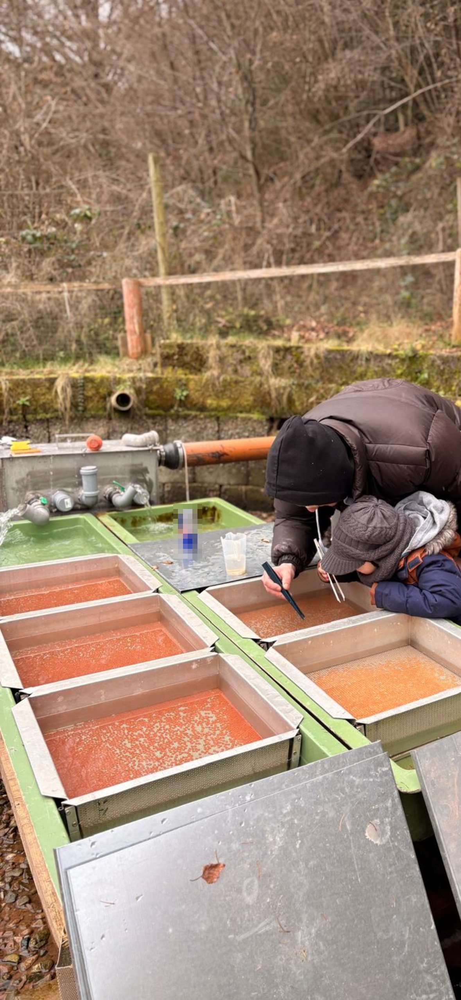

Speisefisch ab Teich
Für den eigenen Tisch
Frisch aus dem Wasser, kurze Wege, keine Zwischenhändler. Abholung nur nach telefonischer Terminvereinbarung.
Ottorfszell & Zittenfelden · Landkreis Miltenberg
Wir züchten Forellen und Saiblinge – vom Ei bis zum Speise- oder Besatzfisch, direkt vom Erzeuger. Für die Küche, zum Grillen und Räuchern oder als Setzling für heimische Vereinsgewässer.
Speisefische
Regenbogenforelle und Saibling – ausschließlich frisch ab Teich.
Besatzfische
Für Angelvereine, Bewirtschafter und öffentliche Gewässer.
Abholung
Nur nach telefonischer Terminvereinbarung. Keine festen Öffnungszeiten.
Seit 2021
Der Start unseres Betriebs – seitdem wächst hier alles Schritt für Schritt.
Ein Betrieb, zwei Orte
Unsere Brutanlage liegt im beschaulichen Zittenfelden. Dort beginnt alles – mit den Eiern unserer eigenen Elternfische. Aus ihnen schlüpfen die Larven, aus denen nach und nach kräftige Setzlinge werden.
Das Wasser dafür kommt aus einer eigenen Quelle, direkt aus dem Berg: sehr gute Qualität und ganzjährig um die 10 °C. Bessere Bedingungen kann man sich für die Aufzucht kaum wünschen.
Sind die Fische groß genug, geht es weiter nach Ottorfszell. Dort wachsen sie in unseren Teichen bis zum Speisefisch heran. Wer Fisch bei uns holt, weiß, in welchem Wasser er geschwommen ist und wer ihn großgezogen hat.
Zwei Wege, wie unser Fisch zu Ihnen kommt.
Speisefische geben wir frisch ab Teich an Privatkunden ab. Besatzfische liefern wir an Angelvereine, Gewässerbewirtschafter und öffentliche Gewässer. Beides kommt aus der eigenen Zucht.
Für den eigenen Tisch
Frisch aus dem Wasser, kurze Wege, keine Zwischenhändler. Abholung nur nach telefonischer Terminvereinbarung.
Für Vereine und Bewirtschafter
Regenbogenforelle, Saibling und Bachforelle aus eigener Zucht – mit Blick auf Gesundheit und Qualität der Fische.
So kommen Sie zu Ihrem Fisch
Wir haben bewusst keine festen Öffnungszeiten. So ist der Fisch wirklich frisch, wenn Sie kommen – und wir haben Zeit für ein Gespräch am Teich.
Ein Anruf, ein Termin – und der Fisch kommt frisch aus dem Wasser, wenn Sie da sind. Wie das genau abläuft, steht auf der Seite Direktverkauf.
Aktuelle Bilder aus dem Betrieb, von den Fischen und aus dem Alltag am Wasser gibt es auf unserem Instagram-Profil.
Über uns
Hölzler’s Forellental ist ein kleiner Fischzuchtbetrieb mit Brutanlage in Zittenfelden und Teichen in Ottorfszell. Vom Ei bis zum fertigen Fisch entsteht hier alles im eigenen Betrieb.
Die Geschichte
2021 hat Hölzler’s Forellental angefangen – mit dem Wunsch, frischen Fisch dort anbieten zu können, wo er auch gewachsen ist.
Dahinter steht die Leidenschaft für die Fische und die Überzeugung, dass regionale Fischzucht hier ihren Platz hat. Alles, was seitdem entstanden ist, ist Schritt für Schritt gewachsen – mit Wasser, Zeit und viel Handarbeit.
Elternfische & eigene Brutanlage
Wir halten eigene Elternfische. Sie sind die Grundlage für den Nachwuchs und bleiben bei uns im Betrieb – unter unseren Augen, in unserem Wasser.
So wissen wir bei jedem Fisch, woher er stammt, und begleiten ihn vom Ei bis zum fertigen Fisch. Nichts daran geht schnell. Fische brauchen Zeit, sauberes Wasser und Ruhe – und die bekommen sie.
Unsere Haltung
Der Fisch wächst hier, wird hier verkauft und hier gegessen. Kurze Wege statt langer Transportketten.
Wasser und Tiere sind die Grundlage des Betriebs. Entsprechend sorgsam gehen wir mit beidem um.
Gesunde Fische, die in Ruhe wachsen dürfen – mit hochwertigem Futter. Das schmeckt man, und das sieht man auch am Besatzfisch.
Bei uns steht immer ein Mensch am Telefon und am Teich. Fragen werden direkt beantwortet.
Aus der Brutanlage
In den Wintermonaten werden die Elternfische abgestreift. Die Eier kommen in die Brutrinnen, wo sie im kühlen Quellwasser heranreifen, bis die Larven schlüpfen. Die ersten beiden Wochen zehren sie noch von ihrem Dottersack – danach beginnt das Anfüttern, eine heikle Phase der Aufzucht. Erst wenn die Brütlinge kräftig genug sind, geht es Schritt für Schritt hinaus in die Teiche.
Vom Ei bis zum Brütling – ein Blick in die Brutanlage.

Tägliche Kontrolle an den Brutrinnen – mit dem größten Fan der Brutanlage.
Hinter dem Namen
Es gibt hier keine Verwaltung und keine Warteschleife. Wenn Sie anrufen, sprechen Sie mit mir – und meistens stehe ich dabei irgendwo zwischen den Teichen.
Genau so ist der Betrieb gedacht: klein genug, dass jeder Fisch jeden Tag gesehen wird, und persönlich genug, dass Sie wissen, mit wem Sie es zu tun haben.
Unsere Fische
Als Speisefische ziehen wir Regenbogenforellen und Saiblinge groß – frisch ab Teich. Die heimische Bachforelle züchten wir für den Besatz von Bächen und Fließgewässern.
Oncorhynchus mykiss
Unser Hauptfisch. Sie wächst bei uns in den Teichen heran und ist als Speisefisch vielseitig – ob geräuchert, gebraten oder aus dem Ofen.
Salvelinus
Der feinere unter unseren Speisefischen. Er stellt hohe Ansprüche an kaltes, sauberes Wasser – und dankt es mit seinem zarten Fleisch.
Salmo trutta fario
Die heimische Forelle unserer Bäche. Wir ziehen sie vor allem für den Besatz von Fließgewässern groß – aus eigener Nachzucht.
Nur frisch ab Teich
Speisefische geben wir ausschließlich frisch bei uns am Teich ab – nach telefonischer Terminvereinbarung.
Wie sie aufwachsen
Unsere Fische wachsen in unseren Teichen auf. Sie brauchen kaltes, sauberes Wasser und Ruhe – und wir die Geduld, ihnen beides zu geben.
Kontrolliert wird täglich, von Hand. Wer seine Fische jeden Tag sieht, merkt sofort, wenn etwas nicht stimmt. Genau das ist der Unterschied, den ein kleiner Betrieb machen kann.
Besatzfische
Neben Speisefischen züchten wir Besatzfische, die an Angelvereine, Gewässerbewirtschafter und öffentliche Gewässer geliefert werden.
Aus eigener Zucht
Ein Gewässer ist nur so gut wie die Fische, die hineinkommen. Deshalb steht bei unseren Besatzfischen die Gesundheit und die Qualität der Tiere an erster Stelle.
Unser Bestand wird regelmäßig vom Fischgesundheitsdienst (FGD) untersucht und ist seuchenfrei. Der Besatz kommt also aus einem geprüften Bestand in Ihr Gewässer.
Oncorhynchus mykiss
Robuster Klassiker für Vereinsgewässer.
Salvelinus
Für kalte, saubere Gewässer.
Salmo trutta fario
Die heimische Art für Bäche und Fließgewässer.
Worauf wir achten
Besatzfische müssen mehr können, als gut auszusehen: Sie sollen im neuen Gewässer zurechtkommen. Deshalb ziehen wir unsere Brut von Anfang an mit hohem Qualitätsanspruch groß – genau wie unsere Speisefische.
Für Anfragen zu Arten, Mengen und Terminen sprechen Sie am besten direkt mit Alexander Hölzler. So lässt sich alles in einem Telefonat klären.
Direktverkauf
Unsere Speisefische verkaufen wir ausschließlich frisch ab Teich. Die Abholung ist nur nach telefonischer Terminvereinbarung möglich.
Der Ablauf
Rufen Sie an und sagen Sie uns, was Sie brauchen und wann es Ihnen passt.
Wir vereinbaren einen festen Abholtermin. So ist der Fisch frisch, wenn Sie kommen.
Sie kommen zur vereinbarten Zeit zu uns und nehmen Ihren Fisch direkt mit.
Bitte beachten
Es gibt keine festen Öffnungszeiten. Bitte kommen Sie nicht unangemeldet vorbei – ohne vereinbarten Termin können wir Ihnen leider keinen Fisch mitgeben. Ein Anruf vorab genügt.
Kein Versand, kein Onlineshop
Wir verkaufen ausschließlich vor Ort ab Teich. Eine Online-Bestellung oder einen Versand bieten wir bewusst nicht an.
Anfahrt
Wie Sie die letzten Meter zu uns finden, steht Schritt für Schritt auf der Anfahrt-Seite.
Kontakt
Termine für die Abholung von Speisefischen und Anfragen zu Besatzfischen werden telefonisch vereinbart.
Ihr Ansprechpartner
Termine bitte telefonisch
Abholtermine vereinbaren wir am liebsten am Telefon – so ist gleich alles geklärt und Sie bekommen sofort eine verbindliche Zusage.
Die Teiche liegen etwas abseits
Die Adresse oben dient nur der Orientierung für das Navigationssystem. Die genaue Wegbeschreibung zu den Teichen finden Sie auf der Anfahrt-Seite.
Anfahrt
Geben Sie im Navi den Klingenweg 5 in Kirchzell / Ottorfszell ein – und lesen Sie bitte die letzten Meter hier nach.
Adresse fürs Navigationssystem
Wichtig: Das ist nicht die Lage der Teiche
Diese Adresse dient ausschließlich der Orientierung für das Navigationssystem. Die Fischteiche liegen nicht direkt an dieser Hausadresse. Ab dort folgen Sie bitte der Beschilderung – die Teiche liegen links unten.
Die letzten Meter
Ab der Navi-Adresse folgen Sie einfach der Beschilderung. Die Teiche liegen ein Stück weiter links unten – dort sind Sie richtig.
Wenn Sie sich unsicher sind: rufen Sie an, wir lotsen Sie die letzten Meter.
Karte von Google Maps
Die Karte lädt erst, wenn Sie sie anfordern. Dabei werden Daten an Google übertragen. Die Wegbeschreibung finden Sie oben auch als Text.
Wenn Sie das erste Mal kommen: einfach der Beschilderung folgen. Die Teiche liegen unterhalb der Straße – von oben sieht man sie schon.
Nur mit Termin
Bitte denken Sie daran: Eine Abholung ist nur nach telefonischer Terminvereinbarung möglich.
Rechtliches
Hölzler’s Forellental
Alexander Hölzler
Frühlingstraße 23
63931 Kirchzell
Telefon: 09373 / 4484
Mobil: 0170 / 6867068
E-Mail: alexander.hoelzler@icloud.com
Land- und forstwirtschaftlicher Betrieb (Teichwirtschaft / Aquakultur), geführt von Alexander Hölzler als natürliche Person. Es handelt sich nicht um einen Gewerbebetrieb; eine Eintragung im Handelsregister besteht nicht.
Der Betrieb unterliegt der Besteuerung nach Durchschnittssätzen für land- und forstwirtschaftliche Betriebe gemäß § 24 UStG. Eine Umsatzsteuer-Identifikationsnummer nach § 27a UStG liegt nicht vor.
Der Betrieb ist als Aquakulturbetrieb registriert bzw. zugelassen. Zuständig ist:
Landratsamt Miltenberg – Veterinäramt
Fährweg 35, 63897 Miltenberg
www.landkreis-miltenberg.de
Alexander Hölzler, Anschrift wie oben.
Die Fischteiche befinden sich nicht an der oben genannten Anschrift. Für die Anfahrt gilt als Orientierung: Klingenweg 5, 63931 Kirchzell / Ottorfszell. Die Brutanlage befindet sich in Zittenfelden.
Rechtliches
Wir freuen uns über Ihr Interesse. Der Schutz Ihrer Daten ist uns wichtig. Hier steht, welche Daten beim Besuch dieser Website anfallen und was damit geschieht.
Alexander Hölzler
Hölzler’s Forellental
Frühlingstraße 23, 63931 Kirchzell
Telefon: 09373 / 4484
E-Mail: alexander.hoelzler@icloud.com
Diese Website setzt keine eigenen Cookies und verwendet keine Analyse- oder Werbedienste. Es gibt kein Kontaktformular und keine Bestellfunktion – die Kontaktaufnahme läuft über Telefon oder E-Mail.
Die Website wird bei Netlify (Netlify, Inc., USA) gehostet. Beim Aufruf werden technisch notwendige Daten verarbeitet: IP-Adresse, Datum und Uhrzeit, aufgerufene Seite, übertragene Datenmenge sowie Browser und Betriebssystem. Diese Daten sind für die Auslieferung und den sicheren Betrieb der Seite erforderlich. Rechtsgrundlage ist unser berechtigtes Interesse an einem störungsfreien Betrieb (Art. 6 Abs. 1 lit. f DSGVO). Eine Verarbeitung in den USA erfolgt auf Grundlage der Standardvertragsklauseln der EU-Kommission.
Wenn Sie uns anrufen oder eine E-Mail schreiben, verwenden wir Ihre Angaben ausschließlich zur Bearbeitung Ihres Anliegens und zur Abwicklung einer möglichen Abholung oder Lieferung (Art. 6 Abs. 1 lit. b und lit. f DSGVO). Wir löschen die Daten, sobald sie nicht mehr benötigt werden; gesetzliche Aufbewahrungsfristen bleiben unberührt.
Auf der Anfahrt-Seite kann eine Karte von Google Maps (Google Ireland Limited, Irland) angezeigt werden. Die Karte lädt nicht automatisch: Sie wird erst geladen, wenn Sie ausdrücklich auf „Karte laden“ klicken. Erst dann werden Daten – unter anderem Ihre IP-Adresse – an Google übertragen und möglicherweise in die USA weitergeleitet. Rechtsgrundlage ist Ihre Einwilligung durch das Anklicken (Art. 6 Abs. 1 lit. a DSGVO). Sie können die Karte einfach nicht laden; die Wegbeschreibung steht vollständig als Text daneben.
Auf der Website befindet sich ein einfacher Link zu unserem Instagram-Profil. Es sind keine Instagram-Inhalte eingebettet. Eine Datenübertragung an Instagram findet erst statt, wenn Sie den Link anklicken. Es gelten dann die Datenschutzbestimmungen von Instagram.
Die Website wird über eine verschlüsselte Verbindung (SSL/TLS) ausgeliefert, erkennbar am „https“ in der Adresszeile.
Sie haben das Recht auf Auskunft über Ihre gespeicherten Daten sowie auf Berichtigung, Löschung, Einschränkung der Verarbeitung, Datenübertragbarkeit und Widerspruch. Wenden Sie sich dazu einfach an die oben genannten Kontaktdaten.
Außerdem steht Ihnen ein Beschwerderecht bei einer Aufsichtsbehörde zu. Zuständig ist das Bayerische Landesamt für Datenschutzaufsicht (BayLDA), Promenade 27, 91522 Ansbach.